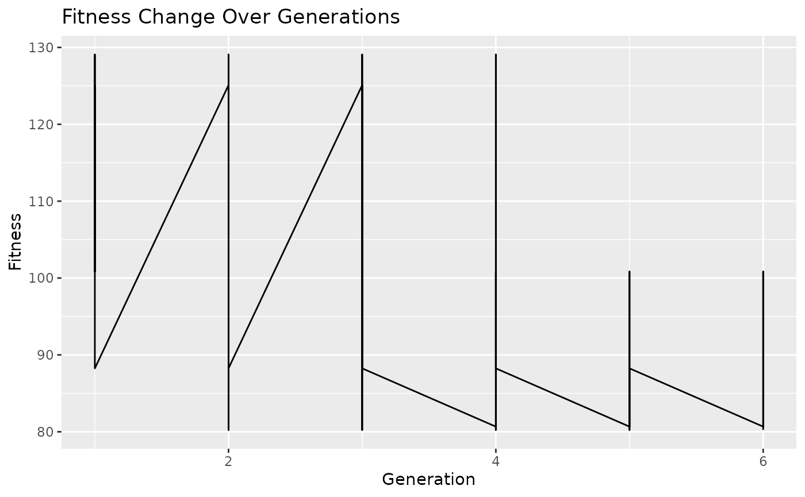

Genetic Algorithm Optimization Vignette
This vignette provides a step-by-step explanation of a genetic algorithm optimization process using the BioGA package.
Chapter 1: Initialization
# Load the BioGA package
library(BioGA)
# Example genomic data
genomic_data <- matrix(rnorm(50), nrow = 10, ncol = 10)
# Initialize population
population <- initialize_population_cpp(genomic_data, population_size = 5)
# Initialize fitness history
fitness_history <- list()
# Initialize time progress
start_time <- Sys.time()Chapter 2: Genetic Algorithm Optimization
# Run genetic algorithm optimization
generation <- 0
while (TRUE) {
generation <- generation + 1
# Evaluate fitness
fitness <- evaluate_fitness_cpp(genomic_data, population)
fitness_history[[generation]] <- fitness
# Check termination condition
if (generation == 6) {
break
}
# Selection
selected_parents <- selection_cpp(population, fitness,
num_parents = 2
)
# Crossover and Mutation
offspring <- crossover_cpp(selected_parents, offspring_size = 2)
# (no mutation in this example)
mutated_offspring <- mutation_cpp(offspring, mutation_rate = 0)
# Replacement
population <- replacement_cpp(population, mutated_offspring,
num_to_replace = 1
)
# Calculate time progress
elapsed_time <- difftime(Sys.time(), start_time, units = "secs")
# Print time progress
cat(
"\rGeneration:", generation, "- Elapsed Time:",
format(elapsed_time, units = "secs"), " "
)
}
#> Generation: 1 - Elapsed Time: 0.0732789 secs Generation: 2 - Elapsed Time: 0.07427955 secs Generation: 3 - Elapsed Time: 0.07440543 secs Generation: 4 - Elapsed Time: 0.07452011 secs Generation: 5 - Elapsed Time: 0.07462311 secsChapter 3: Results Visualization
# Plot fitness change over generations
plot_fitness_history(fitness_history)
This vignette demonstrates how to implement a genetic algorithm optimization process using the BioGA package, from initialization to results visualization.
Session Info
sessioninfo::session_info()
#> ─ Session info ───────────────────────────────────────────────────────────────
#> setting value
#> version R version 4.3.3 (2024-02-29)
#> os Ubuntu 22.04.4 LTS
#> system x86_64, linux-gnu
#> ui X11
#> language en
#> collate C.UTF-8
#> ctype C.UTF-8
#> tz UTC
#> date 2024-03-22
#> pandoc 3.1.11 @ /opt/hostedtoolcache/pandoc/3.1.11/x64/ (via rmarkdown)
#>
#> ─ Packages ───────────────────────────────────────────────────────────────────
#> package * version date (UTC) lib source
#> abind 1.4-5 2016-07-21 [1] RSPM
#> animation 2.7 2021-10-07 [1] RSPM
#> Biobase 2.62.0 2023-10-24 [1] Bioconductor
#> BiocGenerics 0.48.1 2023-11-01 [1] Bioconductor
#> BiocManager 1.30.22 2023-08-08 [1] RSPM
#> biocViews 1.70.0 2023-10-24 [1] Bioconductor
#> BioGA * 0.99.0 2024-03-22 [1] local
#> bitops 1.0-7 2021-04-24 [1] RSPM
#> bslib 0.6.1 2023-11-28 [1] RSPM
#> cachem 1.0.8 2023-05-01 [1] RSPM
#> cli 3.6.2 2023-12-11 [1] RSPM
#> colorspace 2.1-0 2023-01-23 [1] RSPM
#> crayon 1.5.2 2022-09-29 [1] RSPM
#> DelayedArray 0.28.0 2023-10-24 [1] Bioconductor
#> desc 1.4.3 2023-12-10 [1] RSPM
#> digest 0.6.35 2024-03-11 [1] RSPM
#> evaluate 0.23 2023-11-01 [1] RSPM
#> fansi 1.0.6 2023-12-08 [1] RSPM
#> farver 2.1.1 2022-07-06 [1] RSPM
#> fastmap 1.1.1 2023-02-24 [1] RSPM
#> fs 1.6.3 2023-07-20 [1] RSPM
#> GenomeInfoDb 1.38.8 2024-03-15 [1] Bioconduc~
#> GenomeInfoDbData 1.2.11 2024-03-22 [1] Bioconductor
#> GenomicRanges 1.54.1 2023-10-29 [1] Bioconductor
#> ggplot2 3.5.0 2024-02-23 [1] RSPM
#> glue 1.7.0 2024-01-09 [1] RSPM
#> graph 1.80.0 2023-10-24 [1] Bioconductor
#> gtable 0.3.4 2023-08-21 [1] RSPM
#> highr 0.10 2022-12-22 [1] RSPM
#> htmltools 0.5.7 2023-11-03 [1] RSPM
#> IRanges 2.36.0 2023-10-24 [1] Bioconductor
#> jquerylib 0.1.4 2021-04-26 [1] RSPM
#> jsonlite 1.8.8 2023-12-04 [1] RSPM
#> knitr 1.45 2023-10-30 [1] RSPM
#> labeling 0.4.3 2023-08-29 [1] RSPM
#> lattice 0.22-5 2023-10-24 [3] CRAN (R 4.3.3)
#> lifecycle 1.0.4 2023-11-07 [1] RSPM
#> magrittr 2.0.3 2022-03-30 [1] RSPM
#> Matrix 1.6-5 2024-01-11 [3] CRAN (R 4.3.3)
#> MatrixGenerics 1.14.0 2023-10-24 [1] Bioconductor
#> matrixStats 1.2.0 2023-12-11 [1] RSPM
#> memoise 2.0.1 2021-11-26 [1] RSPM
#> munsell 0.5.0 2018-06-12 [1] RSPM
#> pillar 1.9.0 2023-03-22 [1] RSPM
#> pkgconfig 2.0.3 2019-09-22 [1] RSPM
#> pkgdown 2.0.7 2022-12-14 [1] any (@2.0.7)
#> purrr 1.0.2 2023-08-10 [1] RSPM
#> R6 2.5.1 2021-08-19 [1] RSPM
#> ragg 1.3.0 2024-03-13 [1] RSPM
#> RBGL 1.78.0 2023-10-24 [1] Bioconductor
#> Rcpp 1.0.12 2024-01-09 [1] RSPM
#> RCurl 1.98-1.14 2024-01-09 [1] RSPM
#> rlang 1.1.3 2024-01-10 [1] RSPM
#> rmarkdown 2.26 2024-03-05 [1] RSPM
#> RUnit 0.4.33 2024-02-22 [1] RSPM
#> S4Arrays 1.2.1 2024-03-04 [1] Bioconduc~
#> S4Vectors 0.40.2 2023-11-23 [1] Bioconduc~
#> sass 0.4.9 2024-03-15 [1] RSPM
#> scales 1.3.0 2023-11-28 [1] RSPM
#> sessioninfo 1.2.2 2021-12-06 [1] RSPM
#> SparseArray 1.2.4 2024-02-11 [1] Bioconduc~
#> SummarizedExperiment 1.32.0 2023-10-24 [1] Bioconductor
#> systemfonts 1.0.6 2024-03-07 [1] RSPM
#> textshaping 0.3.7 2023-10-09 [1] RSPM
#> tibble 3.2.1 2023-03-20 [1] RSPM
#> utf8 1.2.4 2023-10-22 [1] RSPM
#> vctrs 0.6.5 2023-12-01 [1] RSPM
#> withr 3.0.0 2024-01-16 [1] RSPM
#> xfun 0.42 2024-02-08 [1] RSPM
#> XML 3.99-0.16.1 2024-01-22 [1] RSPM
#> XVector 0.42.0 2023-10-24 [1] Bioconductor
#> yaml 2.3.8 2023-12-11 [1] RSPM
#> zlibbioc 1.48.2 2024-03-13 [1] Bioconduc~
#>
#> [1] /home/runner/work/_temp/Library
#> [2] /opt/R/4.3.3/lib/R/site-library
#> [3] /opt/R/4.3.3/lib/R/library
#>
#> ──────────────────────────────────────────────────────────────────────────────